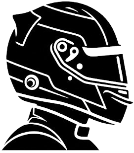

Roda
Conjunto de rodas de liga
leve com design derivado
do motorsport




Aceleração
de 0 a 100km/h
velocidade máxima
0CV
Conjunto de rodas de liga
leve com design derivado
do motorsport

Conjunto de rodas de liga
leve com design de cinco
raios de braço duplo
Toque nos cartões para descobrir

Foi a configuração voltada para utilização nas ruas
combinando o desempenho do 959 com equipamentos e acabamento mais adequados ao uso cotidiano.

Uma versão mais focada em desempenho e com redução de peso.
Recebeu turbo compressores maiores e maior pressão de turbo, chegando a 515 cv. Apenas 29 unidades foram vendidas.

Uma configuração ainda mais rara e potente
com 515 cv, 1.350 kg e velocidade máxima de 339 km/h.
 01
01
Foi o grande momento do 959 nas competições. Três carros terminaram a prova, conquistando primeiro, segundo e sexto lugares.
 02
02
No mesmo ano, o carro terminou as 24 Horas de Le Mans em 7º lugar geral e venceu sua classe IMSA/GTX.